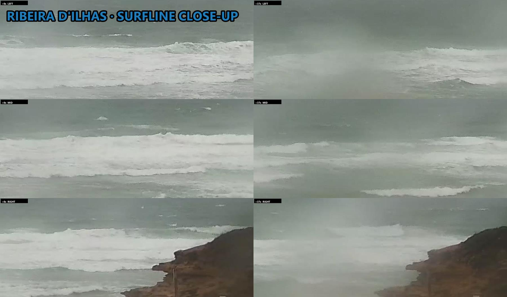
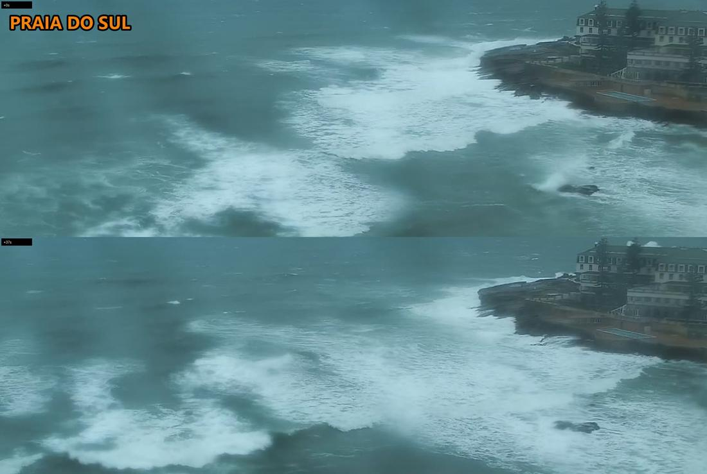
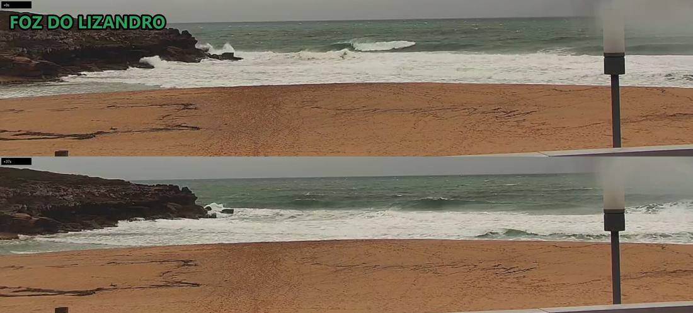

1.8–2.4m★💤 Skip
1.8–2.4m★💤 Skip
liveoffline
| Ribeira | ★ | 1.8-2.4m | blown out, closing out | 0 | ||
|---|---|---|---|---|---|---|
| Norte | ★ | 1.8-2.4m | ||||
| Sul | ★ | 1.8-2.4m | storm whitewater on reef | 0 | ||
| Pedra | ★ | 1.5-2.1m | cam down | - | ||
| Lizandro | ★ | 1.5-2.1m | messy closeouts, onshore | 0 |
| Ribeira | ★ | 1.8-2.4m | |
|---|---|---|---|
| Norte | ★ | 1.8-2.4m | |
| Sul | ★ | 1.8-2.4m | |
| Pedra | ★ | 1.5-2.1m | |
| Lizandro | ★ | 1.5-2.1m |
| Ribeira | blown out, closing out | 0 | |
|---|---|---|---|
| Sul | storm whitewater on reef | 0 | |
| Pedra | cam down | - | |
| Lizandro | messy closeouts, onshore | 0 |
Wave size & rating: surf-forecast.com Ribeira >>
1.8–2.4m★💤 Skip
1.8–2.4m★💤 Skip
1.8–2.4m★💤 Skip
1.8–2.4m★💤 Skip
1.8–2.4m★💤 Skip
1.8–2.4m★💤 Skip
1.8–2.4m★💤 Skip
1.8–2.4m★💤 Skip
1.8–2.4m★💤 Skip
1.8–2.4m★💤 Skip
1.8–2.4m★💤 Skip
1.8–2.4m★💤 Skip
1.5–2.1m★💤 Skip
1.5–2.1m★💤 Skip
1.5–2.1m★💤 Skip
1.5–2.1m★💤 Skip
1.5–2.1m★forecast💤 Skip
1.5–2.1m★💤 Skip
1.5–2.1m★💤 Skip
1.5–2.1m★💤 Skip
1.5–2.1m★💤 Skip
1.5–2.1m★💤 Skip
1.5–2.1m★💤 Skip
1.8–2.4m★forecast💤 Skip
1.5–2.1m★forecast💤 Skip
1.8–2.4m★💤 Skip
0 surfers
blown-out storm closeouts, rain on lens at +37s; close-up L0 M0 R0 / L0 M0 R0 -> 0

1.8–2.4m★💤 Skip
0 surfers
storm whitewater over reef, sets washing through; detail readable, nobody out

1.5–2.1m★💤 Skip
0 surfers
onshore closeouts and heavy shorebreak; 07:30 school group gone, nobody in water on detail

| When | Ribeira | Norte | Sul | Pedra | Lizandro |
|---|---|---|---|---|---|
| 2026-11-21 09:45morning | POOR0 | POOR— | POOR0 | POOR— | POOR0 |
| 2026-11-21 07:30sunrise | ?0 | — | ?0 | ?0 | ?9 |
| 2026-11-20 16:15dusk | POOR0 | POOR-TO-FAIR— | POOR-TO-FAIR2 | POOR-TO-FAIR0 | POOR-TO-FAIR0 |
| 2026-11-20 14:15afternoon | POOR0 | POOR-TO-FAIR— | POOR-TO-FAIR2 | POOR-TO-FAIR0 | POOR-TO-FAIR0 |
| 2026-11-20 12:00lunch | POOR-TO-FAIR0 | POOR-TO-FAIR— | POOR-TO-FAIR2 | POOR-TO-FAIR0 | POOR-TO-FAIR0 |
| 2026-11-20 09:45morning | POOR-TO-FAIR0 | POOR-TO-FAIR— | POOR-TO-FAIR2 | POOR-TO-FAIR0 | POOR-TO-FAIR0 |
| 2026-11-20 07:30sunrise | ?0 | — | ?0 | ?0 | ?0 |
| 2026-11-19 16:15dusk | POOR0 | POOR— | POOR0 | POOR0 | POOR0 |